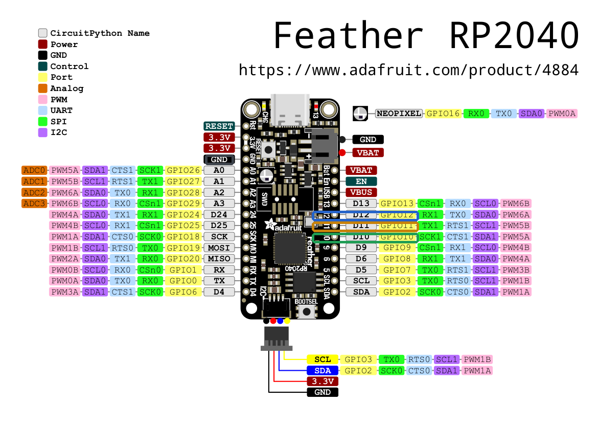

被動 SPI 螢幕探針
把自有目標板的 控制器→OLED 匯流排測試點，被動高阻抗接到 Feather RP2040。四條線：資料、時脈、選擇、接地。+5V 與 ON 不接。
上面是重繪的示意圖，焊盤位置是照著擺的——快速看「哪條接哪、哪些不接」用。真要在板子上找點，請對照下面的 Feather 原圖；目標板側的測試點依該板資料手冊／原理圖定位，下刀前用三用電表復驗。

| 目標板 測試點 | RP2040 GPIO | Feather 腳位 | 作用 |
|---|---|---|---|
| D1（DI） | GP10 | D10 | 資料線 |
| CLK | GP11 | D11 | 時脈 |
| CS | GP12 | D12 | 晶片選擇（frame 邊界） |
| GND | GND | GND | 共地（必接） |
| +5V vUSB | 不接 NC | 探針由自身 USB 供電 | |
| ON | 不接 NC | 電源/致能，與旁觀無關 | |
量 CLK 或 D1 對地電壓。3.3V → 可直接接。1.8V → RP2040 輸入高準位門檻約 2.0V，會讀得不穩（garbage/斷續，不是乾淨失敗），需串接電平轉換/比較器。
這是被動探針：RP2040 由自己的 USB 線供電（也是讀資料的管道）。把 目標板 的 +5V 接到 RP2040 可能回灌、燒壞元件。唯一共用的電源連線是 GND。
共地是訊號的共同參考，少了它讀不到正確電位。MHz 訊號，探針線盡量短；GPIO 全為高阻抗輸入，不要加上拉。
目標板 是三線 SPI、D/C 內嵌；四條線就是 CS/CLK/DI/GND。你找到的 D1 即資料線 DI。
目標板 沒有公開原理圖，這幾點的位置是依該板資料手冊／原理圖對出來的。接之前先用三用電表復驗：GND 對金屬屏蔽/電池負極應導通；上電後量各點對地電壓辨識 +5V 與訊號線，別只憑照片下刀。（Feather 那側相反——有原理圖可直接定位。）
picotool reboot -f -u && picotool load -x poc/build/spi-tap/spi_tap.uf2
python3 poc/host/usb_probe.py --read 10
GND 與電壓。spi_tap.pio 的 wait 邊緣（預設 mode 0）。D10/D11/D12（＝GP10/11/12）：純數位、無上拉，適合被動搭線。⚠ Feather 的 Dn 絲印 ≠ GPIO 編號，且 GP4 未接出（USBBOOT）、GP2/GP3 是 I2C（SDA/SCL），故都不用。依 Adafruit 原理圖。spi_tap.c 的 PIN_DI/PIN_CLK/PIN_CS，但 DI 與 CLK 必須相鄰、且要選 Feather 有接出的腳。python3 poc/host/live_mirror.py 即時鏡像成第二螢幕；或存檔後 python3 poc/host/raster.py <檔> 還原單張。自有裝置 · 無敏感內容 · 被動高阻抗 · 目標板測試點依該板資料手冊、Feather 腳位依 Adafruit 原理圖 — 見 docs/2nd-screen.md